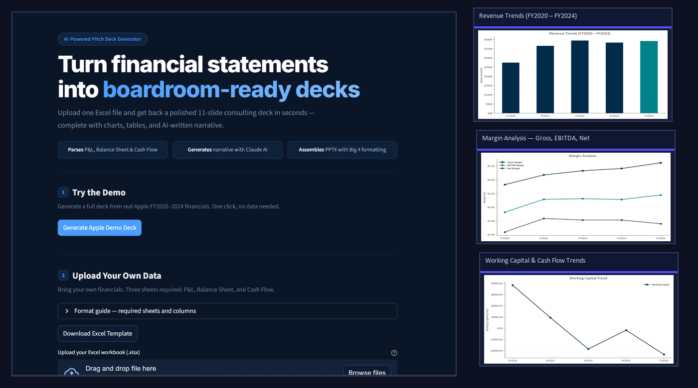
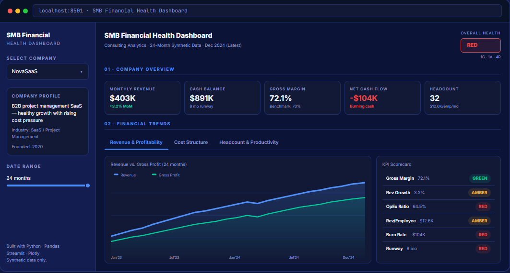
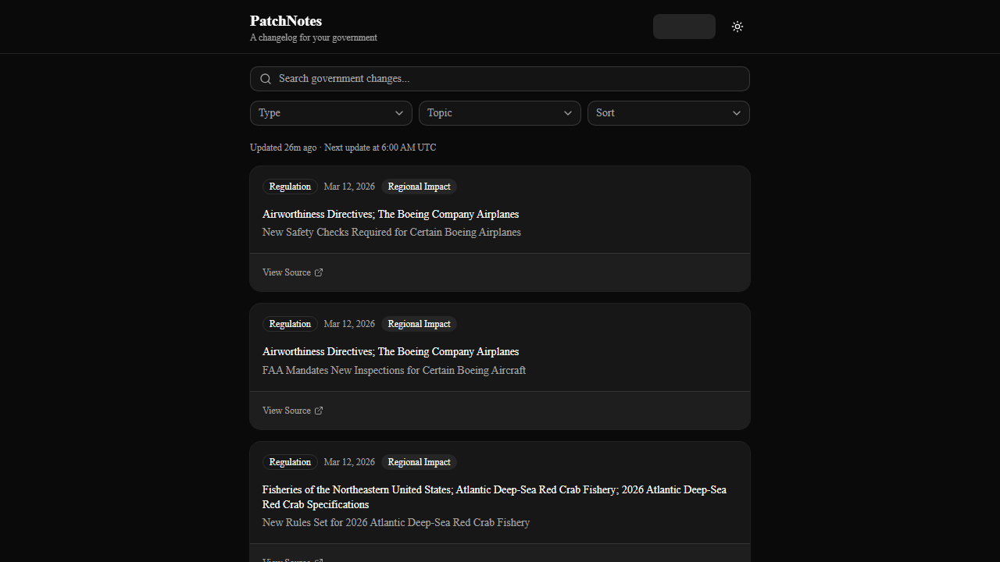
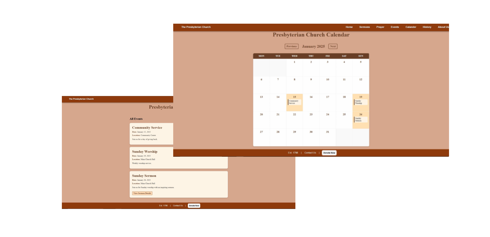
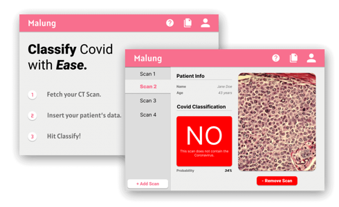
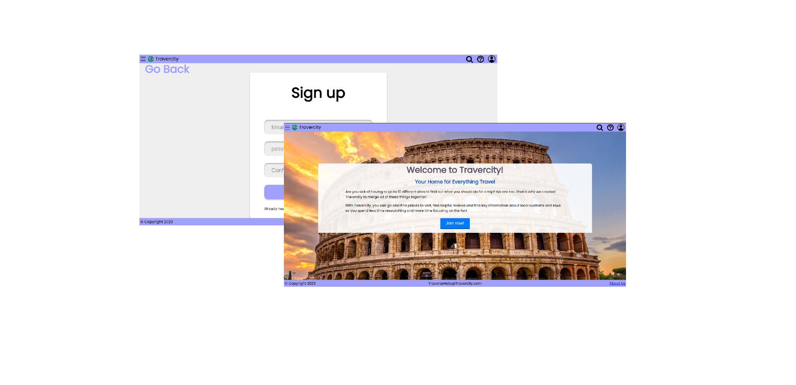

The full project archive — spanning consulting automation, AI classification, civic tech, and web development.

Builds polished Big 4-style PowerPoint pitch decks from Excel financial data, then uses Claude AI to generate narrative insights for each slide.
Full pipeline covering parsing, KPI computation, chart rendering, and deck assembly.

A consulting analytics tool that tracks the financial health of small-to-medium SaaS businesses.
Features KPI scorecards, RAG benchmarking, P&L waterfall charts, and auto-generated consultant narratives — powered by synthetic data for two fictional companies.

A changelog for your government — AI-generated summaries of federal regulations,
executive orders, and bills with search, filtering, and email digests.

A responsive site showcasing events, sermons, and an interactive calendar.
Built with HTML, CSS, and JavaScript, focusing on community engagement.

AI‑driven COVID‑19 lung‑scan classifier built with Docker & Microsoft Azure.
Integrated a Figma UI with a MariaDB back‑end.

A travel‑planning web app that features real‑time weather integration
and location‑based recommendations for a better itinerary experience.